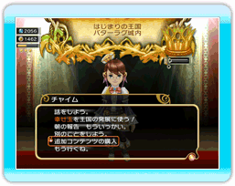

26 |
追加コンテンツについて |
 |
「小さな王様と約束の国 ファイナルファンタジー・クリスタルクロニクル」は、追加コンテンツをダウンロードすることで、よりゲームを楽しむことができます。  追加コンテンツの購入は、タイトル画面の「追加コンテンツの購入」、または、お城の中に入ったときに表示されるメニュー「追加コンテンツの購入」から購入画面へ行き、Wiiポイントを使って購入できます。 ダウンロードした追加コンテンツを削除してしまうと、セーブデータが使用できなくなることがあります。そのような場合、タイトルメニューから追加コンテンツをもう一度ダウンロードしてください。再ダウンロードのときは同じ追加コンテンツであれば、課金されることはありません。 ※追加コンテンツの購入にはWiiポイントが必要となります。Wiiポイントの購入方法ついてはWiiショッピングチャンネル、または任天堂のホームページをご覧ください。 ●無限の塔 必要ブロック数：8 何度でも挑戦できる「無限の塔」を含む、2つのダンジョンを追加します。クリアするたびにレベルが上昇し、最終的には最強の冒険者が挑戦するやりこみの場となります。 ●お城リフォーム 必要ブロック数：8 お城で冒険者の名前を変更したり、音楽を聴けるようになるダンジョンが追加されます。 ●図書館 必要ブロック数：8 種族固有のアビリティを教える「図書館」を建設可能にするダンジョンが追加されます。 ●王様のやんちゃ服 必要ブロック数：3 元気でスポーティな王様の服が追加されます。購入後、すぐにお城で着替えることができます。 ●チャイムのどっきりビキニ 必要ブロック数：3 チャイムの魅力を引き出すリゾートスタイルの水着が追加されます。購入後、すぐにお城で着替えることができます。 ●ダンジョン詰め合わせ 必要ブロック数：1 武器屋・道具屋・防具屋・遊技場・酒場・立て札の公園・噴水の公園・民家の建設数が増える、11個のダンジョンの詰め合わせです。 ●３種族の家パック 必要ブロック数：2 リルティ・セルキー・ユークの３種族の家がまとめて入ったお得なパック商品です。 ●リルティの家 必要ブロック数：1 優秀な戦士の種族「リルティの家」を建設可能にするダンジョンが追加されます。 ●セルキーの家 必要ブロック数：1 すぐれたシーフの種族「セルキーの家」を建設可能にするダンジョンが追加されます。 ●ユークの家 必要ブロック数：1 知恵ある魔道士の種族「ユークの家」を建設可能にするダンジョンが追加されます。 ●王様のお着替え 必要ブロック数：3 キュートでパンクな王様の服を追加します。購入後、すぐにお城で着替えることができます。 ●チャイムのおめかし 必要ブロック数：3 ちょっとオトナなチャイムの小悪魔風衣装を追加します。購入後、すぐにお城で着替えることができます。 ●豪華な家 必要ブロック数：1 多くの国民を呼びよせる「豪華な家」を建設可能にするダンジョンが追加されます。 ●聖なるほこら 必要ブロック数：1 冒険者を一時的に強化する「聖なるほこら」を建設可能にするダンジョンが追加されます。 ※ご注意 これらの追加コンテンツは「小さな王様と約束の国 ファイナルファンタジー・クリスタルクロニクル」で使用する追加コンテンツです。 追加コンテンツ単体では遊べません。 |
 |
 |